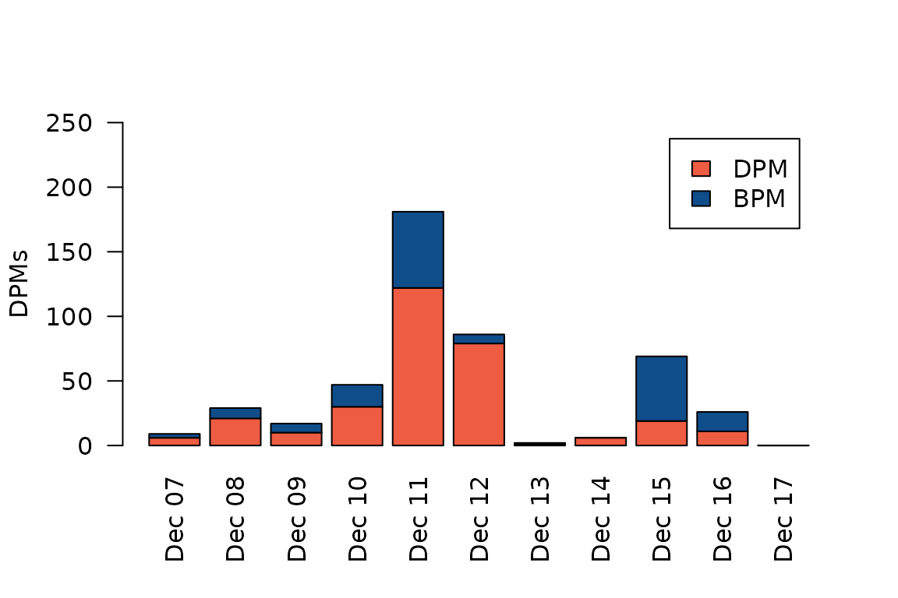

Overview and basic usage
fpod.RmdFeatures
The most important feature in this package is the capability of reading FPOD and CPOD data into R directly from the FPOD data files (i.e. the .CP1, .CP3, .FP1 and .FP3 files). The FPOD data files contain binary data, so they can’t trivially be read into R using the usual approach (e.g. fread or read.csv). This package decodes the binary data and imports all the data in one go (i.e. header/metadata, clicks, KERNO classifications, environmental data and pseudo-WAV data). It is then trivial to aggregate data as you please, e.g. DPMs per time block. The advantage of handling data processing in R is a long topic, but suffice it to say that it 1) simplifies things (many fewer steps, as different vars have to be exported in multiple goes in the official FPOD app), and more importantly, 2) makes data processing 100% transparent and reproducible.
Note that at the time of writing, the fpod R package has only partial support for CPOD files - that is to say, it can only import click and classification data, but not environmental & wav data. I plan to add this in the future.
Suggested workflow
- Use the official FPOD app to import FPOD data from a FPOD memory card (this generates a FP1 file)
- Use the FPOD app to run the KERNO or KERNO-F classifier (this generates a CP3 or FP3 file)
- Perform checks, edits and validations (again, in the FPOD app)
- Use the FPOD R package (this package) to read the FP3 file data into R
- Run your data processing and analyses in R
Basic usage
Some basic examples are provided below. See ?fp_read for details.
First, let’s load the package and read a FP3 file. For this example, we’ll use the sample data bundled with the package, which contains 10 days of FPOD data from a quiet site in northern Troms county, in Norway.
library(fpod)
fn <- fp_example("gullars_period1.FP3")
dat <- fp_read(fn)This gives us a list with four elements, each of which is a data.table (however, the WAV element may be missing depending on the specific file being read).
names(dat)
#> [1] "header" "env" "wav" "clicks"Let’s inspect each of these elements in turn.
str(dat$header)
#> List of 15
#> $ pod_id : int 7660
#> $ first_logged_min: int 65709000
#> $ last_logged_min : int 65723400
#> $ water_depth : int 30
#> $ deployment_depth: int 0
#> $ lat_text : chr "70,03332"
#> $ lon_text : chr "18,9162"
#> $ location_text : chr ""
#> $ notes_text : chr ""
#> $ gmt_text : chr ""
#> $ pic_ver : raw 23
#> $ fpga_ver : int 1034
#> $ extended_amps : logi TRUE
#> $ clicks_in_fp1 : num 48680158
#> $ filename : chr "/home/runner/work/_temp/Library/fpod/extdata/gullars_period1.FP3"We can see that this gives us a mix of technical and deployment
specific metadata. In fact, there’s a lot more information stored in the
CPOD/FPOD headers that the fpod package currently doesn’t care about.
Also, the specific information available may vary between CPOD and FPOD
files. Note that the time-specification stored in
first_logged_min and last_logged_min both
refer to the minutes elapsed since 1900-01-01. We can easily convert
this to a more human-friendly date format:
as.POSIXct("1900-01-01", tz="") + dat$header$first_logged_min * 60
#> [1] "2024-12-07 06:00:00 UTC"We multiply by 60 since R interprets the number as seconds in POSIXct arithmetic.
Next we have a data.table called env. This table lists
the angle from vertical (in degrees) of the pod, the temperature
recorded by the pod, as well as battery voltage (in desivolts) for each
of the two battery columns, per minute. The minutes are relative to when
the pod was started, i.e. first_logged_min.
str(dat$env)
#> Classes 'data.table' and 'data.frame': 14400 obs. of 7 variables:
#> $ minute : int 1 2 3 4 5 6 7 8 9 10 ...
#> $ angle : int 36 36 28 36 35 26 32 32 34 32 ...
#> $ degC : int 6 6 6 6 6 6 6 6 6 6 ...
#> $ bat1v : num 1.58 1.58 1.58 1.58 1.58 1.58 1.58 1.58 1.6 1.58 ...
#> $ bat2v : num 1.4 1.38 1.38 1.4 1.4 1.4 1.38 1.38 1.38 1.38 ...
#> $ bat_use: int 1 1 1 1 1 1 1 1 1 1 ...
#> $ pod_on : logi TRUE TRUE TRUE TRUE TRUE TRUE ...
#> - attr(*, ".internal.selfref")=<pointer: 0x55b2ffdb0ef0>Now let’s turn our attention to the next element: The wav data.table holds extra information (inter-peak-intervals, IPI + sound pressure level, SPL) for a sample of recorded clicks, usually less than 1%, but possibly more or less depending on user configuration.
str(dat$wav)
#> Classes 'data.table' and 'data.frame': 15995 obs. of 3 variables:
#> $ click_no: int 547 547 547 547 547 547 547 736 736 736 ...
#> $ IPI : int 255 29 29 30 30 31 34 255 255 255 ...
#> $ SPL : int 8 37 45 46 40 27 24 3 12 4 ...
#> - attr(*, ".internal.selfref")=<pointer: 0x55b2ffdb0ef0>Finally, and most importantly, we have the clicks data:
str(dat$clicks)
#> Classes 'data.table' and 'data.frame': 82637 obs. of 14 variables:
#> $ pod : int 7660 7660 7660 7660 7660 7660 7660 7660 7660 7660 ...
#> $ time : POSIXct, format: "2024-12-07 12:42:11" "2024-12-07 12:42:11" ...
#> $ minute : int 402 402 402 402 402 402 402 402 402 402 ...
#> $ microsec : int 11382235 11467200 11552250 11637180 11722190 11892225 11977090 12062095 12147010 12231990 ...
#> $ click_no : int 1 2 3 4 5 6 7 8 9 10 ...
#> $ train_id : int 1 1 1 1 1 1 1 1 1 1 ...
#> $ species : chr "Unclassed" "Unclassed" "Unclassed" "Unclassed" ...
#> $ quality_level: int 1 1 1 1 1 1 1 1 1 1 ...
#> $ echo : logi FALSE FALSE FALSE FALSE FALSE FALSE ...
#> $ ncyc : int 4 6 6 12 5 3 3 3 4 10 ...
#> $ pkat : int 0 4 3 7 3 0 2 2 0 3 ...
#> $ khz : num 98 114 133 103 111 114 103 100 108 103 ...
#> $ amp_at_max : int 30 43 25 44 30 22 26 24 34 37 ...
#> $ has_wav : logi FALSE FALSE FALSE FALSE FALSE FALSE ...
#> - attr(*, ".internal.selfref")=<pointer: 0x55b2ffdb0ef0>
#> - attr(*, "start")= POSIXct[1:1], format: "2024-12-07 06:00:00"
#> - attr(*, "on")= int [1:14400] 1 2 3 4 5 6 7 8 9 10 ...And that’s pretty much it. Now you have your CPOD/FPOD data in R and can do whatever you want with it. Most of the columns listed above should be fairly self-explanatory if you’re used to working with FPOD data. If not, or if you just need a reminder, you can always see ?fp_read for a detailed overview. Note that if you’re reading a CP1 or FP1 file, then the species column will be all NAs, since there is no information from the KERNO classifier in those files.
Common tasks
The fpod package does provide a couple of convenience functions to facilitate common tasks. We’ll have a look at those here.
First, we can use fp_summarize() to sum up
detection-positive-minutes (DPMs) for a set of clicks. A DPM is defined
as 1 if we have at least one detection during that minute; 0 otherwise.
Usually, we will want to first subset only the clicks we care about for
our analysis. For example, let’s calculate DPMs for NBHF (narrow-band,
high frequency) clicks of quality 2 or better. For the region where
these data were collected, this corresponds to selecting only harbour
porpoise clicks.
nbhf <- dat$clicks[species == "NBHF" & quality_level >= 2]
dpm <- fp_summarize(nbhf)
print(dpm)
#> pod time dpm bpm
#> <int> <POSc> <int> <int>
#> 1: 7660 2024-12-07 06:01:00 0 0
#> 2: 7660 2024-12-07 06:02:00 0 0
#> 3: 7660 2024-12-07 06:03:00 0 0
#> 4: 7660 2024-12-07 06:04:00 0 0
#> 5: 7660 2024-12-07 06:05:00 0 0
#> ---
#> 14396: 7660 2024-12-17 05:56:00 0 0
#> 14397: 7660 2024-12-17 05:57:00 0 0
#> 14398: 7660 2024-12-17 05:58:00 0 0
#> 14399: 7660 2024-12-17 05:59:00 0 0
#> 14400: 7660 2024-12-17 06:00:00 0 0Of course, there were no detections in the first and last 5 minutes of the pod’s recording, so all we see are zeros in this preview. But we can expect some rows to be nonzero.
Let’s just verify to be sure.
sum(dpm$dpm)
#> [1] 472There you go!
You may also have noticed there’s another column bpm in
the data.table returned by fp_summarize(). This brings us
to the other convenience function in fpod,
fp_find_buzzes(). This function tries to do exactly what
the name implies - find NBHF buzzes, which are commonly taken to be
indicative of feeding. See ?fp_find_buzzes for some information on
exactly how this is achieved.
Similar to fp_summarize(), fp_find_buzzes()
should be passed the subset of clicks for which we want to find buzzes.
While it only makes sense to use this on NBHF clicks, the function
doesn’t care about that, it will try to find buzzes for whatever clicks
data you give it.
buzz <- fp_find_buzzes(nbhf)
str(buzz)
#> int [1:43216] 0 0 0 0 0 0 0 0 0 0 ...
table(buzz)
#> buzz
#> 0 1
#> 34321 8895We can see that the function gives us a vector of 1s and 0s. You’ll find that the length of this vector is identical to the number of rows in the clicks data.table that we used.
So we now have a classification for each NBHF click that tells us that it was or wasn’t a feeding buzz, with value 1 and 0, respectively.
We can add the buzz info to the NBHF clicks data.table we’re investigating.
nbhf$buzz <- buzzIf we now re-execute fp_summarize() on the updated
data.table, we’ll find that it can see and understand the buzz column,
and it will handle buzzes in a similar way as it handles detections; by
summing them up per minute.
dpm2 <- fp_summarize(nbhf)
sum(dpm2$dpm)
#> [1] 472
sum(dpm2$bpm)
#> [1] 167Now that we have NBHF detections and buzzes in minute-resolution, we can use that as a basis to further aggregate data to some time scale that we think is sensible for our purposes, whether it be plotting trends or statistical analysis. In this case, let’s sum up DPMs and BPMs per day.
Let’s illustrate these data with a simple stacked barplot. Note that we subtract BPM from DPMs to avoid double-counting detections, since a BPM implies a DPM (a porpoise must obviously have been detected for there to be porpoise clicks to classify as buzzes).
mat <- matrix(c(dpm_per_day$dpm - dpm_per_day$bpm, dpm_per_day$bpm), nrow=2, byrow=TRUE)
barplot(mat, las = 2, ylim=c(0,250), col = c("tomato2", "dodgerblue4"),
names.arg = format(dpm_per_day$date, "%b %d"), xlab="", ylab = "DPMs")
legend("topright", inset = 0.05, fill = c("tomato2", "dodgerblue4"),
legend = c("DPM", "BPM"))
We see that we have the most NBHF detections on December 11, when we have almost 200 DPMs. This corresponds to 200/1440 = 14%, i.e. porpoises were detected at this site for 14% of the day that day. The highest proportion of feeding buzzes occurred four days later, on December 15, when more than half of all clicks have been classified as feeding buzzes.Ok, so that’s an overview of the three functions that are currently
available in the fpod package. The package really is primarily meant to
get the CP3/FP3 data into R in a streamlined manner, and to help
facilitate transparency and reproducible code. But the formal analysis
is left to the user! Have a look at ?fp_read,
?fp_find_buzzes and fp_summarize for more
details on each of these functions.
Disclaimer
Note that this package is not affiliated with the manufacturer of the CPOD and FPOD Chelonia.